Aufprall mit niedriger Geschwindigkeit auf Crashbox
Ziel
Durchführung einer Netzkonvergenzstudie, Verständnis
der Konzepte der Zeitintegration, Massenskalierung und Versagensanalyse mit LSPP
Vorgehensweise
Anfängliche Netzgröße von 6mm wurde gewählt und eine
Netzkonvergenzstudie durchgeführt, gefolgt von Versagensanalysen mit verschiedenen
Dicken der Crashbox, um das beste Modell für die gegebenen Abmessungen vorzuschlagen.
Einheiten
Tonne, mm, Sek, N, MPa, N-mm (mJ)
Fahrzeugmasse
1,2 Tonnen (konzentriert)
Anfangsgeschwindigkeit
10 km/h (2777,7 mm/s)
Ergebnisse mit 6mm Netz
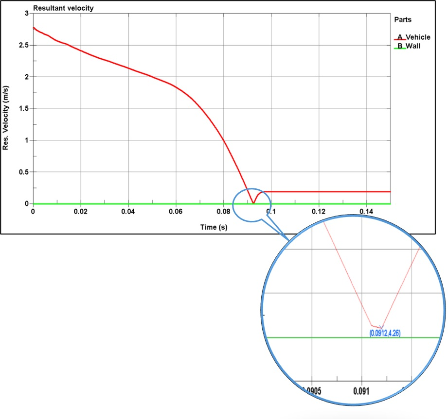
Ergebnisse der Netzkonvergenz
Versagensanalyse mit verschiedenen Crashbox-Dicken
Durchführung einer quasistatischen Analyse gemäß
BIS14812:2005 und Ermittlung geeigneter Ergebnisse mit LSPP
Einheiten
Tonne, mm, Sek, N, MPa, N-mm (mJ)
Annahme
Gewicht des LKW = 1,8 Tonnen
Belastung
Gemäß BIS 14812:2005
Aufgebrachte Lasten
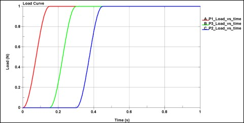
Mit starren Versteifungen (2mm dick) und starren Halterungen (10mm)
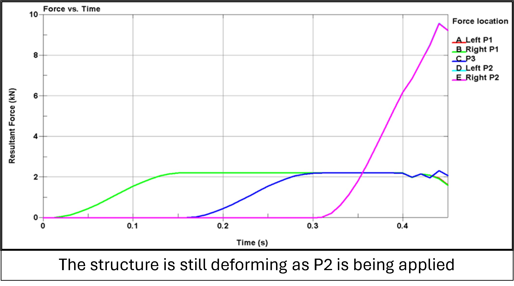
RUPD Dicke = 1,2 mm (ohne Versteifungen)
RUPD Dicke = 1,3 mm (ohne Versteifungen)
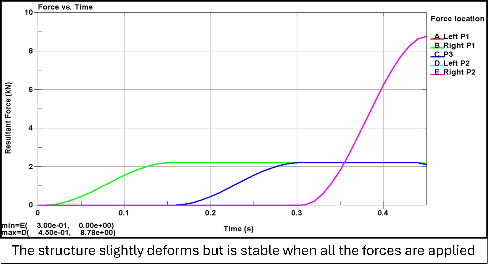
Aufgabe-2: Modalanalyse eines Sitzes
Ziel
Ermittlung der modalen Frequenzen eines Sitzes
Frequenz = 22,0 Hz
Frequenz = 30,4 Hz
Frequenz = 36,8 Hz
Frequenz = 41,3 Hz
Frequenz = 51,6 Hz
Frequenz = 52,1 Hz
Aufgabe-3: Gepäckrückhaltetest
Projekt
Explizite Analyse des Sitzsystems bei Frontalaufprall
Ziel
Durchführung des Gepäckrückhaltetests gemäß ECE R17
und Ermittlung geeigneter Ergebnisse mit LSPP
Einheiten
Tonne, mm, Sek, N, MPa, N-mm (mJ)
Ergebnisse
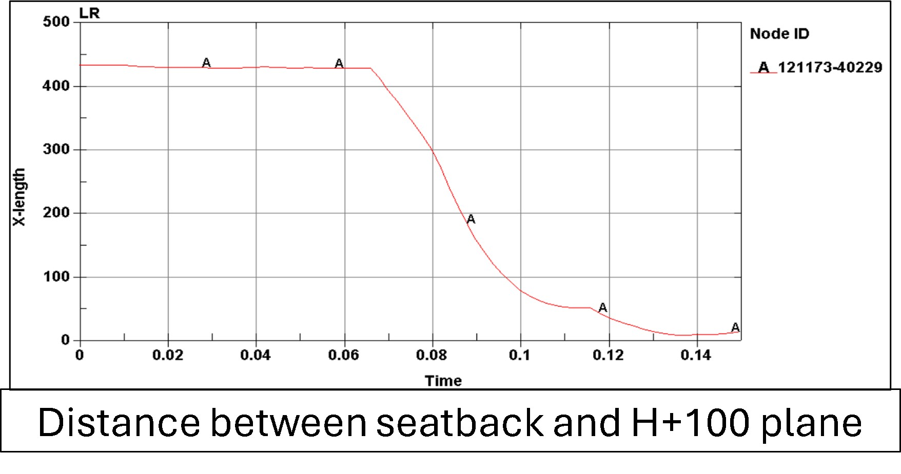
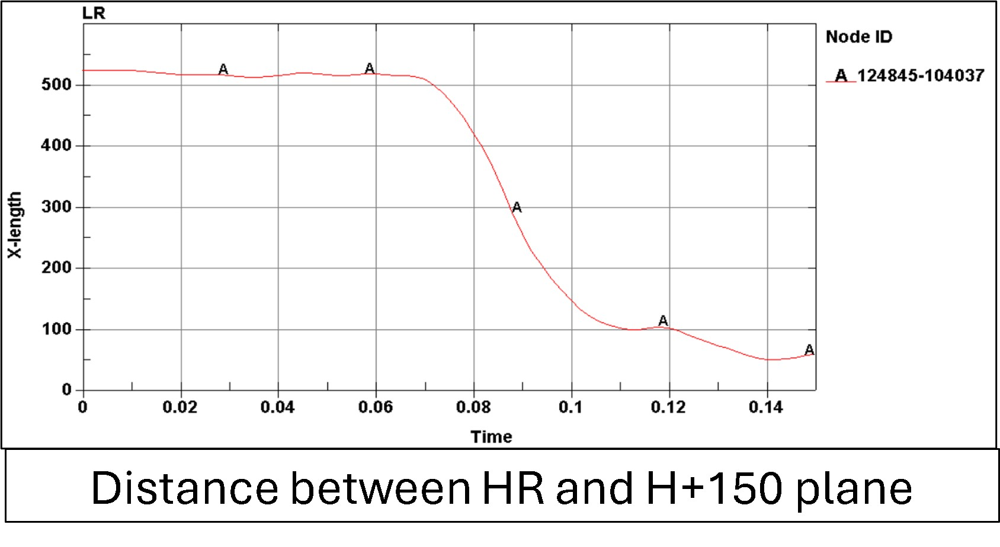
Aufgabe-4: Analyse der Sicherheitsgurt-Verankerung
Ziel
Prüfung der Sicherheitsgurt-Verankerung gemäß ECE R14
Einheiten
Tonne, mm, Sek, N, MPa, N-mm (mJ)
Bestehungskriterien
Der Sitz muss die Belastungen aushalten (auch wenn sich die Schienen lösen oder eine Halterung verbiegt) und die Bestehungskriterien sind die gleichen wie beim Gepäckrückhaltetest (in Bezug auf H-, H+100- und H+150-Ebenen)
Simulationsaufbau und Belastungen
Verankerungspunkte
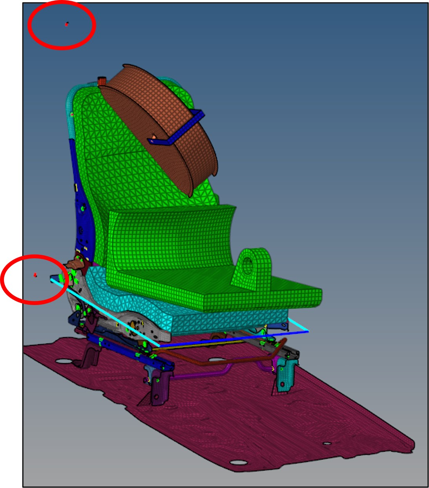
Verschiebungen bei Vorspannungsbelastungen
Verschiebungen bei Vollbelastung
Kraft- und Energieanalyse
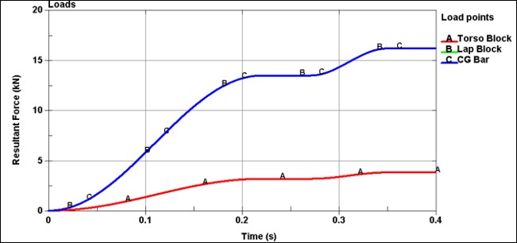
Werkzeuge
LS-DYNA
LS-PrePost
HyperMesh
HyperView
MS PowerPoint
MS Excel
Über das Unternehmen
Das ELENO Engineering Learning Center (ELENO-ELC) mit Sitz in Pune, Indien, ist eine anerkannte CAE-Ausbildungseinrichtung, die sich darauf spezialisiert hat, Maschinenbauingenieuren expertengeleite Kurse in LS-DYNA, Hypermesh und anderen modernen Ingenieurtechnologien anzubieten. Mit Schwerpunkt auf praktischem Unterricht, realen Projekten und karriereorientiertem Mentoring gibt ELENO den Studierenden die Werkzeuge, die sie brauchen, um in der wettbewerbsintensiven CAE-Branche erfolgreich zu sein. Unter der Leitung erfahrener Fachleute bietet die Einrichtung umfassende Mitgliedschaftspläne, die auf die Ziele jedes einzelnen Mitglieds zugeschnitten sind, sowie Unterstützung bei der Vermittlung an führende OEMs, Tier-1-Unternehmen und Verteidigungsagenturen. ELENO hat sich zum Ziel gesetzt, zukünftige Ingenieure zu arbeitsmarktfähigen Fachkräften auszubilden.


 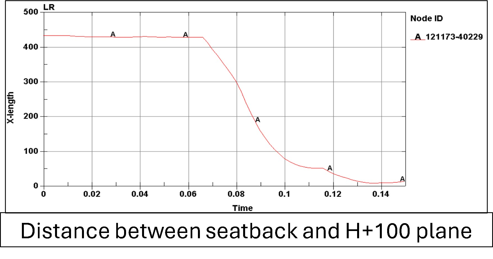
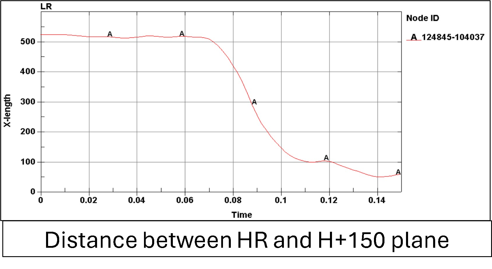
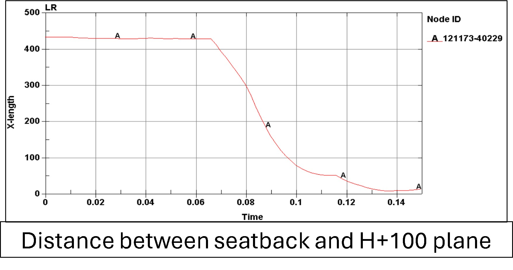
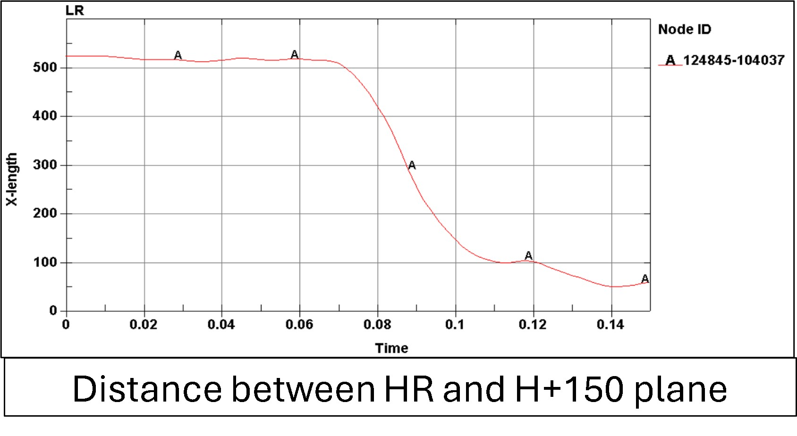


 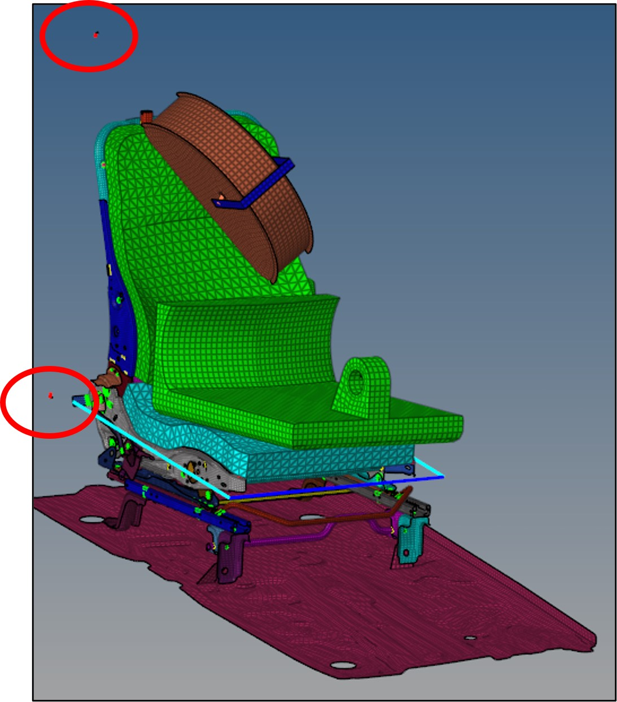
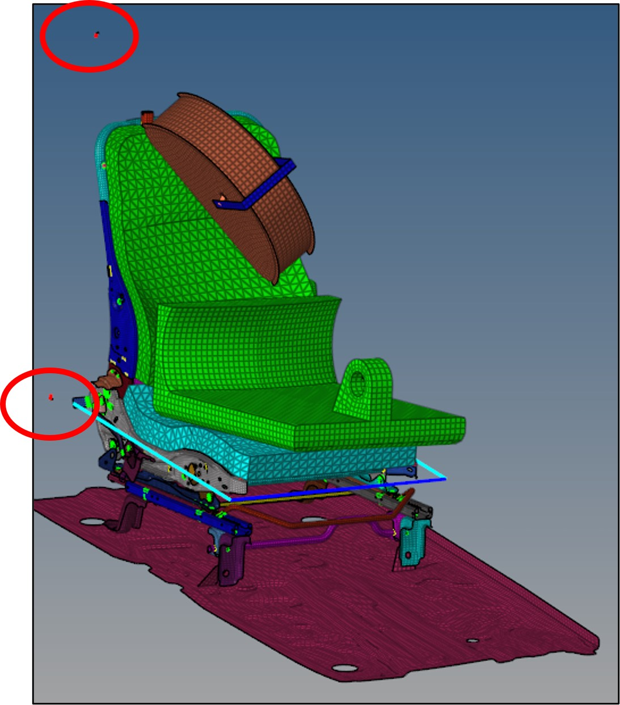
 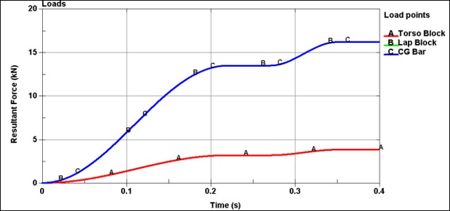
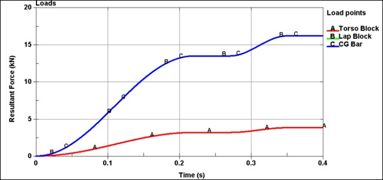